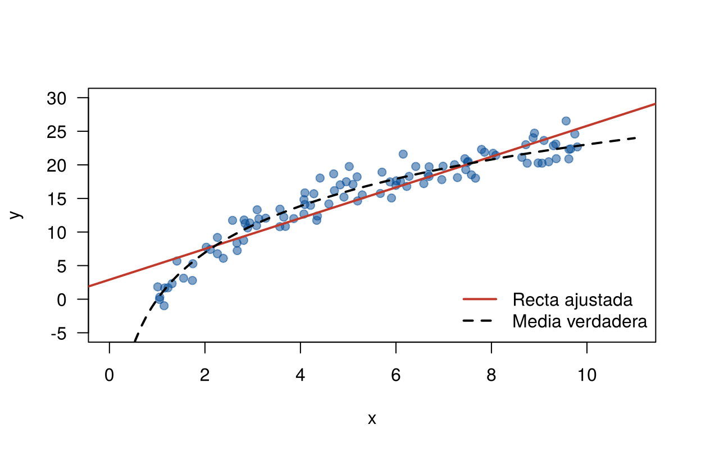
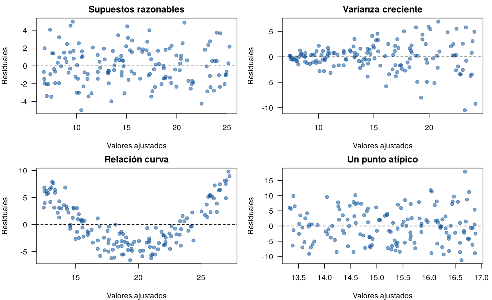

Las pruebas, los intervalos y las predicciones de las páginas
anteriores se apoyan en cuatro supuestos sobre los errores.
lm() calcula la recta aunque los supuestos no se cumplan, y
no avisa. Por eso hay que saber qué dice cada supuesto, qué se daña si
falla y qué tan grave es.
Esta página presenta los supuestos y sus consecuencias. La página siguiente, Revisión de los supuestos, muestra cómo revisarlos con los datos, y la sección Soluciones del menú, qué hacer cuando fallan. Los bloques de código se ejecutan en orden.
El modelo es \(y_i = \beta_0 + \beta_1 x_i + \varepsilon_i\), con:
| Supuesto | En símbolos | En palabras |
|---|---|---|
| 1. Linealidad | \(E(\varepsilon_i \mid x_i) = 0\) | La media de \(y\) es una recta en \(x\) |
| 2. Varianza constante (homocedasticidad) | \(\text{Var}(\varepsilon_i \mid x_i) = \sigma^2\) | La dispersión alrededor de la recta es la misma para todo \(x\) |
| 3. Independencia | Los \(\varepsilon_i\) no están correlacionados | Conocer el error de una observación no dice nada del error de otra |
| 4. Normalidad | \(\varepsilon_i \sim N(0, \sigma^2)\) | Alrededor de la recta, los datos siguen una normal |
Los supuestos se refieren a los errores, no a las variables. No se necesita que \(x\) ni \(y\) tengan distribución normal: el abdomen puede tener cualquier distribución.
| Si falla | Pendiente estimada | Errores estándar, pruebas e IC | Intervalo de predicción | Qué tan grave |
|---|---|---|---|---|
| Linealidad | Sesgada: describe mal la relación | Sin sentido, porque el modelo es otro | Sesgado | Muy grave |
| Varianza constante | Insesgada, pero ya no es la más precisa | Incorrectos: los IC pueden cubrir menos del 95 % | Muy ancho donde hay poca variación y muy angosto donde hay mucha | Grave para la inferencia |
| Independencia | Insesgada | Incorrectos, casi siempre demasiado pequeños: se encuentran efectos que no existen | Incorrecto | Grave |
| Normalidad | Insesgada y la mejor entre las lineales | Aproximadamente correctos si \(n\) es grande, por el teorema del límite central | Incorrecto aunque \(n\) sea grande | Leve para la inferencia; importante para predecir |
Hay dos lecciones:
Una simulación lo muestra. Se generan 5 000 muestras de 100 datos de un modelo con pendiente verdadera igual a 2, primero con varianza constante y luego con una desviación estándar que crece con \(x\). En cada muestra se calcula el intervalo del 95 % para la pendiente y se cuenta cuántas veces contiene el 2.
set.seed(2026)
n <- 100
x <- runif(n, 1, 10)
cubre <- function(desv_est) {
y <- 5 + 2 * x + rnorm(n, 0, desv_est)
ic <- confint(lm(y ~ x))[2, ]
ic[1] <= 2 & 2 <= ic[2]
}
c(varianza_constante = mean(replicate(5000, cubre(3))),
varianza_creciente = mean(replicate(5000, cubre(0.6 * x^1.5))))varianza_constante varianza_creciente
0.9454 0.8954 Con varianza constante, el intervalo cubre el valor verdadero cerca del 95 % de las veces, como promete. Con varianza creciente, la cobertura cae: el intervalo dice 95 % pero acierta menos. La pendiente estimada sigue siendo insesgada; lo que falla es la medida de su incertidumbre.
Si la relación real es curva y se ajusta una recta, la pendiente describe un promedio de pendientes distintas y las predicciones se equivocan de forma sistemática.
set.seed(2026)
x <- runif(100, 1, 10)
y <- 10 * log(x) + rnorm(100, 0, 1.5)
recta <- lm(y ~ x)
plot(x, y, pch = 19, col = "#034A9480", las = 1, xlim = c(0, 11), ylim = c(-5, 30))
abline(recta, col = "#C0392B", lwd = 2)
curve(10 * log(x), add = TRUE, lty = 2, lwd = 2)
legend("bottomright", bty = "n", lty = c(1, 2), lwd = 2, col = c("#C0392B", "black"),
legend = c("Recta ajustada", "Media verdadera"))
Datos simulados con relación curva y la recta ajustada.
La recta queda por debajo de la media verdadera en el centro y por encima en los extremos. Ningún intervalo corrige esto: el problema es el modelo, no la muestra.
Como los errores no se observan, los supuestos se revisan con los residuales. El gráfico más útil es el de residuales contra valores ajustados. Si los supuestos se cumplen, los puntos forman una franja horizontal alrededor de cero, sin forma.
set.seed(2026)
x <- runif(150, 1, 10)
casos <- list(
"Supuestos razonables" = 5 + 2 * x + rnorm(150, 0, 2),
"Varianza creciente" = 5 + 2 * x + rnorm(150, 0, 0.5 * x),
"Relación curva" = 5 + 2 * x + 0.6 * (x - 5.5)^2 + rnorm(150, 0, 1.5),
"Un punto atípico" = c(5 + 2 * x[-1] + rnorm(149, 0, 2), 5 + 2 * x[1] + 15)
)
par(mfrow = c(2, 2), mar = c(4, 4, 2, 1))
for (nombre in names(casos)) {
m <- lm(casos[[nombre]] ~ x)
plot(fitted(m), residuals(m), pch = 19, col = "#034A9480", las = 1, main = nombre,
xlab = "Valores ajustados", ylab = "Residuales")
abline(h = 0, lty = 2)
}
Residuales contra valores ajustados en cuatro situaciones simuladas.
| Patrón | Indica |
|---|---|
| Franja horizontal sin forma | Los supuestos 1 y 2 son razonables |
| Embudo (la dispersión crece o decrece) | Varianza no constante |
| Curva | Falta de linealidad |
| Puntos muy alejados | Valores atípicos (página Puntos influyentes) |
La independencia depende de cómo se recogieron los datos, más que de los datos mismos. Hay que preguntarse si unas observaciones pueden estar relacionadas con otras:
| Situación | Por qué falla la independencia |
|---|---|
| Datos en el tiempo (ventas mensuales, una serie anual) | Lo que pasa un mes se parece a lo del mes anterior |
| Mediciones repetidas en las mismas personas | Las mediciones de una persona se parecen entre sí |
| Grupos (estudiantes de un mismo colegio, árboles de una misma finca) | Los del mismo grupo comparten condiciones |
| Datos en el espacio (municipios vecinos) | Los vecinos se parecen |
En los datos de grasa corporal, cada hombre se midió una vez y no hay un orden en el tiempo: no hay razones para dudar de la independencia. Si los datos tienen alguna de estas estructuras, se necesitan otros modelos (series de tiempo, modelos mixtos), que están fuera de esta unidad.
| Problema | Causa | Solución |
|---|---|---|
| Revisar la normalidad de \(x\) o de \(y\) | Los supuestos son sobre los errores | Revisar los residuales |
| Creer que la heterocedasticidad sesga la pendiente | Se confunde sesgo con precisión | La pendiente sigue insesgada; fallan los errores estándar |
| Preocuparse solo por la normalidad | Es el supuesto más conocido | Revisar primero linealidad e independencia |
| Revisar la independencia con una prueba sin orden en los datos | Las pruebas de independencia necesitan un orden | Pensar en cómo se recogieron los datos |
Concluir que se cumple un supuesto porque
lm() no dio error |
lm() no revisa supuestos |
Revisar con gráficos de residuales |
Repita la simulación de cobertura con errores exponenciales
centrados, rexp(n, 1/3) - 3, que son muy asimétricos.
¿Cuánto cubre el intervalo de la pendiente?
set.seed(2026)
n <- 100
x <- runif(n, 1, 10)
mean(replicate(5000, {
y <- 5 + 2 * x + rexp(n, 1 / 3) - 3
ic <- confint(lm(y ~ x))[2, ]
ic[1] <= 2 & 2 <= ic[2]
}))[1] 0.9524Cubre cerca del 95 %. Con 100 datos, la falta de normalidad casi no afecta el intervalo de la pendiente.
Un estudiante ajusta el gasto en vivienda según el ingreso de 300 hogares y ve que los residuales forman un embudo que se abre hacia la derecha. ¿Qué supuesto falla? ¿Está sesgada la pendiente? ¿Qué pasa con su intervalo de confianza?
Falla la varianza constante: los hogares de más ingreso varían más en su gasto. La pendiente sigue siendo insesgada si la relación es lineal, pero su error estándar y su intervalo de confianza no son confiables. La página Varianza no constante muestra cómo corregirlo.
¿En cuál de estos estudios hay que dudar de la independencia? (a) El peso de 200 recién nacidos de un hospital en un año. (b) El precio diario del dólar durante 2025. (c) La nota de 120 estudiantes de 4 cursos de un mismo colegio.
En (b), porque el precio de un día se parece al del día anterior. En (c), porque los estudiantes de un mismo curso comparten profesor y condiciones. En (a) puede haber dudas si hay gemelos, pero en general se acepta la independencia.
Última revisión: 9 de noviembre de 2026.